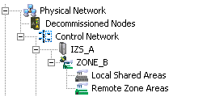
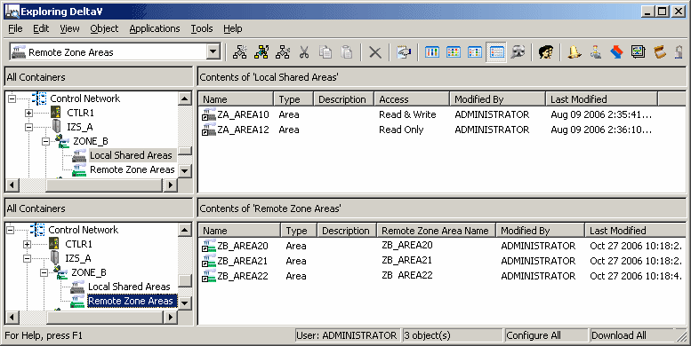

Remote Zone Areas
For example, a DeltaV Zones implementation contains two DeltaV systems whose zone names are ZONE_A and ZONE_B. The following figure shows part of the DeltaV Explorer hierarchy of ZONE_A.

The ZONE_B Remote Zone container represents the DeltaV system whose zone name is ZONE_B. Under the ZONE_B container the Local Shared Areas specifies which areas from ZONE_A can be accessed in ZONE_B and whether that access is read only or read and write. Remote Zone Areas lists the areas in ZONE_B that are defined as Local Shared Areas under ZONE_A in ZONE_B's configuration. The following table shows how Local Shared Areas and Remote Zone Areas could be configured for ZONE_A.
|
Areas in ZONE_A |
ZONE_B configuration |
|
|---|---|---|
|
Local Shared Areas |
Remote Zone Areas |
|
|
Configuration from ProfessionalPLUS in ZONE_A |
||
|
AREA_A |
ZA_AREA10 |
ZB_AREA20 |
The following figure shows a split view of DeltaV Explorer in ZONE_A that includes the details for the ZONE_B Remote Zone container Local Shared Areas and the Remote Zone Areas panes.

In the Local Shared Areas pane ZA_AREA10 has its access defined as Read & Write. That means that users in ZONE_B who have sufficient rights in ZONE_A can read and change parameter values in this area (if other criteria are met).
In the Remote Zone Areas pane the Name column contains the names that areas in ZONE_B are known by in this system. You can rename the remote zone areas. The Remote Zone Area Name column shows the area's name in the remote system. If you add a remote zone area whose name duplicates an existing local or remote zone area name, a number is appended to the name to make it unique in this DeltaV system.
Similarly, from ZONE_B the ZONE_A container's Local Shared Areas and Remote Zone Areas could be configured as shown in the following table.
|
Areas in ZONE_B |
ZONE_A configuration |
|
|---|---|---|
|
Local Shared Areas |
Remote Zone Areas |
|
|
Configuration From ProfessionalPLUS in ZONE_B |
||
|
AREA_A |
ZB_AREA20 |
ZA_AREA10 |
Populating the Remote Zone Areas folder is required if:
- You want users to be able to write to parameters in another zone,
- You want alarms and events from a remote zone to be recorded in a local zone,
- You want alarms from the remote zone to appear in the alarm banner and alarm displays in the local zone.
The tables show how Local Shared Areas defined in one DeltaV system appear as Remote Zone Areas in other zones after adding them from another system. For example, the areas configured in ZONE_A as Local Shared Areas (ZA_AREA10 and ZA_AREA12) in ZONE_B appear in ZONE_B's Remote Zone container in ZONE_A as Remote Zone Areas. This relationship between the Local Shared Areas in one DeltaV systems and the Remote Zone Areas in another DeltaV system is true in both directions for every pair of connected DeltaV systems.
If you delete a local area in one DeltaV system after sharing it and adding it to another DeltaV system as a Remote Zone Area, you must manually delete the area from the Remote Zone Areas folder in the other system. For example:
The ZONE_A Remote Zone Areas folder in ZONE_B contains AREA_1.
If you then delete AREA_1 in ZONE_A's Local Shared Areas folder, AREA_1 remains in the ZONE_A folder in ZONE_B. You can delete AREA_1 from the folder to remove it.